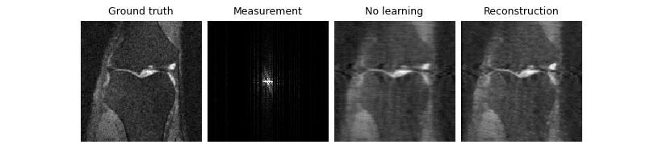
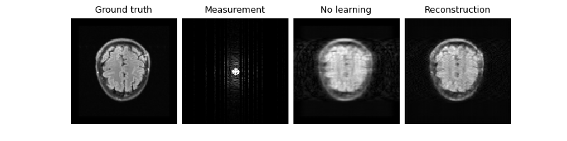

Note
Go to the end to download the full example code.
Tour of MRI functionality in DeepInverse#
This example presents the various datasets, forward physics and models available in DeepInverse for Magnetic Resonance Imaging (MRI) problems:
Physics:
deepinv.physics.MRI,deepinv.physics.MultiCoilMRI,deepinv.physics.DynamicMRIDatasets: the full FastMRI dataset
deepinv.datasets.FastMRISliceDatasetand a lightweight, easy-to-use subsetdeepinv.datasets.SimpleFastMRISliceDatasetModels:
deepinv.models.VarNet(VarNet/E2E-VarNet),deepinv.models.MoDL(a simple MoDL unrolled model)
Contents:
Get started with FastMRI (singlecoil + multicoil)
Train an accelerated MRI with neural networks
Load raw FastMRI data (singlecoil + multicoil)
Train using raw data
Explore 3D MRI
Explore dynamic MRI
import deepinv as dinv
import torch, torchvision
from torch.utils.data import DataLoader
device = dinv.utils.get_freer_gpu() if torch.cuda.is_available() else "cpu"
rng = torch.Generator(device=device).manual_seed(0)
1. Get started with FastMRI#
You can get started with our simple FastMRI mini slice subsets which provide quick, easy-to-use, in-memory datasets which can be used for simulation experiments.
Important
By using this dataset, you confirm that you have agreed to and signed the FastMRI data use agreement.
See also
- Datasets
deepinv.datasets.FastMRISliceDatasetdeepinv.datasets.SimpleFastMRISliceDataset We provide convenient datasets to easily load both raw and reconstructed FastMRI images. You can download more data on the FastMRI site.
Load mini demo knee and brain datasets (original data is 320x320 but we resize to 128 for speed):
transform = torchvision.transforms.Resize(128)
knee_dataset = dinv.datasets.SimpleFastMRISliceDataset(
dinv.utils.get_data_home(),
anatomy="knee",
transform=transform,
train=True,
download=True,
)
brain_dataset = dinv.datasets.SimpleFastMRISliceDataset(
dinv.utils.get_data_home(),
anatomy="brain",
transform=transform,
train=True,
download=True,
)
img_size = knee_dataset[0].shape[-2:] # (128, 128)
dinv.utils.plot({"knee": knee_dataset[0], "brain": brain_dataset[0]})
0%| | 0/820529 [00:00<?, ?it/s]
100%|██████████| 801k/801k [00:00<00:00, 147MB/s]
0%| | 0/820534 [00:00<?, ?it/s]
100%|██████████| 801k/801k [00:00<00:00, 136MB/s]
Let’s start with single-coil MRI. We can define a constant Cartesian 4x
undersampling mask by sampling once from a physics generator. The mask,
data and measurements will all be of shape (B, C, H, W) where
C=2 is the real and imaginary parts.
physics_generator = dinv.physics.generator.GaussianMaskGenerator(
img_size=img_size, acceleration=4, rng=rng, device=device
)
mask = physics_generator.step()["mask"]
physics = dinv.physics.MRI(mask=mask, img_size=img_size, device=device)
dinv.utils.plot(
{
"x": (x := next(iter(DataLoader(knee_dataset)))),
"mask": mask,
"y": physics(x).clamp(-1, 1),
}
)
print("Shapes:", x.shape, physics.mask.shape)

Shapes: torch.Size([1, 2, 128, 128]) torch.Size([1, 2, 128, 128])
We can next generate an accelerated single-coil MRI measurement dataset. Let’s use knees for training and brains for testing.
We can also use the physics generator to randomly sample a new mask per sample, and save the masks alongside the measurements:
dataset_path = dinv.datasets.generate_dataset(
train_dataset=knee_dataset,
test_dataset=brain_dataset,
val_dataset=None,
physics=physics,
physics_generator=physics_generator,
save_physics_generator_params=True,
overwrite_existing=False,
device=device,
save_dir=dinv.utils.get_data_home(),
batch_size=1,
)
train_dataset = dinv.datasets.HDF5Dataset(
dataset_path, split="train", load_physics_generator_params=True
)
test_dataset = dinv.datasets.HDF5Dataset(
dataset_path, split="test", load_physics_generator_params=True
)
dinv.utils.plot(
{
"x0": train_dataset[0][0],
"mask0": train_dataset[0][2]["mask"],
"x1": train_dataset[1][0],
"mask1": train_dataset[1][2]["mask"],
}
)
Dataset has been saved at datasets/dinv_dataset0.h5
We can also simulate multicoil MRI data. Either pass in ground-truth
coil maps, or pass an integer to simulate simple birdcage coil maps. The
measurements y are now of shape (B, C, N, H, W), where N is
the coil-dimension.
mc_physics = dinv.physics.MultiCoilMRI(img_size=img_size, coil_maps=3, device=device)
dinv.utils.plot(
{
"x": x,
"mask": mask,
"coil_map_0": mc_physics.coil_maps.abs()[:, 0, ...],
"coil_map_1": mc_physics.coil_maps.abs()[:, 1, ...],
"coil_map_2": mc_physics.coil_maps.abs()[:, 2, ...],
"RSS": mc_physics.A_adjoint_A(x, mask=mask, rss=True),
}
)
2. Train an accelerated MRI problem with neural networks#
Next, we train a neural network to solve the MRI inverse problem. We provide various models specifically used for MRI reconstruction. These are unrolled networks which require a backbone denoiser, such as UNet or DnCNN:
denoiser = dinv.models.UNet(
in_channels=2,
out_channels=2,
scales=2,
)
denoiser = dinv.models.DnCNN(
in_channels=2,
out_channels=2,
pretrained=None,
depth=2,
)
These backbones can be used within specific MRI models, such as VarNet/E2E-VarNet and MoDL, for which we provide implementations:
model = dinv.models.VarNet(denoiser, num_cascades=2, mode="varnet").to(device)
model = dinv.models.MoDL(denoiser, num_iter=2).to(device)
Now that we have our architecture defined, we can train it with supervised or self-supervised (using Equivariant Imaging) loss. We use the PSNR metric on the complex magnitude.
For the sake of speed in this example, we only use a very small 2-layer DnCNN inside an unrolled network with 2 cascades, and train with 2 images for 1 epoch.
loss = dinv.loss.SupLoss()
loss = dinv.loss.EILoss(transform=dinv.transform.CPABDiffeomorphism())
trainer = dinv.Trainer(
model=model,
physics=physics,
optimizer=torch.optim.Adam(model.parameters()),
train_dataloader=(train_dataloader := DataLoader(train_dataset)),
metrics=dinv.metric.PSNR(complex_abs=True),
epochs=1,
show_progress_bar=False,
save_path=None,
)
To improve results in the case of this very short training, we start training from a pretrained model state (trained on 900 images):
url = dinv.models.utils.get_weights_url(
model_name="demo", file_name="demo_tour_mri.pth"
)
ckpt = torch.hub.load_state_dict_from_url(
url, map_location=lambda storage, loc: storage, file_name="demo_tour_mri.pth"
)
trainer.model.load_state_dict(ckpt["state_dict"]) # load the state dict
trainer.optimizer.load_state_dict(ckpt["optimizer"]) # load the optimizer state dict
model = trainer.train() # train the model
trainer.plot_images = True
Downloading: "https://huggingface.co/deepinv/demo/resolve/main/demo_tour_mri.pth?download=true" to /home/runner/.cache/torch/hub/checkpoints/demo_tour_mri.pth
0%| | 0.00/37.4k [00:00<?, ?B/s]
100%|██████████| 37.4k/37.4k [00:00<00:00, 152MB/s]
The model has 2376 trainable parameters
Train epoch 0: TotalLoss=0.0, PSNR=30.972
Now that our model is trained, we can test it. Notice that we improve the PSNR compared to the zero-filled reconstruction, both on the train (knee) set and the test (brain) set:
- 
- 
Eval epoch 0: PSNR=30.996, PSNR no learning=29.946
Test results:
PSNR no learning: 29.946 +- 0.566
PSNR: 30.996 +- 0.604
Eval epoch 0: PSNR=29.194, PSNR no learning=28.316
Test results:
PSNR no learning: 28.316 +- 0.480
PSNR: 29.194 +- 0.098
3. Load raw FastMRI data#
It is also possible to use the raw data directly.
The raw multi-coil FastMRI data is provided as pairs of (x, y) where
y are the fully-sampled k-space measurements of arbitrary size, and
x are the cropped root-sum-square (RSS) magnitude reconstructions.
dinv.datasets.download_archive(
dinv.utils.get_image_url("demo_fastmri_brain_multicoil.h5"),
dinv.utils.get_data_home() / "brain" / "fastmri.h5",
)
dataset = dinv.datasets.FastMRISliceDataset(
dinv.utils.get_data_home() / "brain", slice_index="middle"
)
x, y = next(iter(DataLoader(dataset)))
print("Shapes:", x.shape, y.shape) # x (B, 1, W, W); y (B, C, N, H, W)
img_size, kspace_shape = x.shape[-2:], y.shape[-2:]
n_coils = y.shape[2]
0%| | 0/58754328 [00:00<?, ?it/s]
61%|██████ | 34.2M/56.0M [00:00<00:00, 359MB/s]
100%|██████████| 56.0M/56.0M [00:00<00:00, 355MB/s]
0%| | 0/1 [00:00<?, ?it/s]
100%|██████████| 1/1 [00:00<00:00, 1509.29it/s]
Shapes: torch.Size([1, 1, 213, 213]) torch.Size([1, 2, 4, 512, 213])
We can relate x and y using our
deepinv.physics.MultiCoilMRI (note that since we are not
provided with the ground-truth coil-maps, we can only perform the
adjoint operator).
physics = dinv.physics.MultiCoilMRI(
img_size=img_size,
mask=torch.ones(kspace_shape),
coil_maps=torch.ones((n_coils,) + kspace_shape, dtype=torch.complex64),
device=device,
)
x_rss = physics.A_adjoint(y, rss=True, crop=True)
assert torch.allclose(x, x_rss)
4. Train using raw data#
We now use a mask generator to generate acceleration masks on-the-fly
(online) during training. We use the E2E-VarNet model designed for
multicoil MRI. We do not perform coil sensitivity map estimation and
simply assume they are flat as above. To do this yourself, pass a model
as the sensitivity_model parameter.
physics_generator = dinv.physics.generator.GaussianMaskGenerator(
img_size=kspace_shape, acceleration=4, rng=rng, device=device
)
model = dinv.models.VarNet(denoiser, num_cascades=2, mode="e2e-varnet").to(device)
Note that we require overriding the base
deepinv.Trainer to deal with raw measurements, as we
do not want to generate k-space measurements, only mask it.
Note
We require loop_random_online_physics=True and shuffle=False in the dataloader to ensure that each image is always matched with the same random mask at each iteration.
class RawFastMRITrainer(dinv.Trainer):
def get_samples_online(self, iterators, g):
# Get data
x, y = next(iterators[g])
x, y = x.to(self.device), y.to(self.device)
# Get physics
physics = self.physics[g]
# Generate random mask
params = self.physics_generator[g].step(
batch_size=y.size(0), img_size=y.shape[-2:]
)
# Generate measurements directly from raw measurements
y *= params["mask"]
physics.update(**params)
return x, y, physics
We also need to modify the metrics used to crop the model output when comparing to the cropped magnitude RSS targets:
transform = torchvision.transforms.Compose(
[
torchvision.transforms.CenterCrop(x.shape[-2:]),
dinv.metric.functional.complex_abs,
]
)
class CropMSE(dinv.metric.MSE):
def forward(self, x_net=None, x=None, *args, **kwargs):
return super().forward(transform(x_net), x, *args, **kwargs)
class CropPSNR(dinv.metric.PSNR):
def forward(self, x_net=None, x=None, *args, **kwargs):
return super().forward(transform(x_net), x, *args, **kwargs)
trainer = RawFastMRITrainer(
model=model,
physics=physics,
physics_generator=physics_generator,
online_measurements=True,
loop_random_online_physics=True,
losses=dinv.loss.SupLoss(metric=CropMSE()),
metrics=CropPSNR(),
optimizer=torch.optim.Adam(model.parameters()),
train_dataloader=DataLoader(dataset, shuffle=False),
epochs=1,
save_path=None,
show_progress_bar=False,
)
_ = trainer.train()
/home/runner/work/deepinv/deepinv/deepinv/training/trainer.py:280: UserWarning: Generated measurements repeat each epoch. Ensure that dataloader is not shuffling.
warnings.warn(
The model has 2372 trainable parameters
Train epoch 0: TotalLoss=0.752, CropPSNR=1.24
5. Explore 3D MRI#
We can also simulate 3D MRI data.
Here, we use a demo 3D brain volume of shape (181, 217, 181) from the
BrainWeb dataset
and simulate 3D single-coil or multi-coil Fourier measurements using
deepinv.physics.MRI or
deepinv.physics.MultiCoilMRI.
x = (
torch.from_numpy(
dinv.utils.demo.load_np_url(
"https://huggingface.co/datasets/deepinv/images/resolve/main/brainweb_t1_ICBM_1mm_subject_0.npy?download=true"
)
)
.unsqueeze(0)
.unsqueeze(0)
.to(device)
)
x = torch.cat([x, torch.zeros_like(x)], dim=1) # add imaginary dimension
print(x.shape) # (B, C, D, H, W) where D is depth
physics = dinv.physics.MultiCoilMRI(img_size=x.shape[1:], three_d=True, device=device)
physics = dinv.physics.MRI(img_size=x.shape[1:], three_d=True, device=device)
dinv.utils.plot_ortho3D([x, physics(x)], titles=["x", "y"])
torch.Size([1, 2, 181, 217, 181])
6. Explore dynamic MRI#
Finally, we show how to use the dynamic MRI for image sequence data of
shape (B, C, T, H, W) where T is the time dimension. Note that
this is also compatible with 3D MRI. We use dynamic MRI data from the
CMRxRecon challenge of cardiac cine
sequences and load them using deepinv.datasets.CMRxReconSliceDataset
provided in deepinv. We download demo data from the first patient
including ground truth images, undersampled kspace, and associated masks:
dinv.datasets.download_archive(
dinv.utils.get_image_url("CMRxRecon.zip"),
dinv.utils.get_data_home() / "CMRxRecon.zip",
extract=True,
)
dataset = dinv.datasets.CMRxReconSliceDataset(
dinv.utils.get_data_home() / "CMRxRecon",
)
x, y, params = next(iter(DataLoader(dataset)))
print(
f"""
Ground truth: {x.shape} (B, C, T, H, W)
Measurements: {y.shape}
Acc. mask: {params["mask"].shape}
"""
)
0%| | 0/24695321 [00:00<?, ?it/s]
86%|████████▌ | 20.3M/23.6M [00:00<00:00, 212MB/s]
100%|██████████| 23.6M/23.6M [00:00<00:00, 213MB/s]
Extracting: 0%| | 0/10 [00:00<?, ?it/s]
Extracting: 100%|██████████| 10/10 [00:00<00:00, 133.39it/s]
0%| | 0/1 [00:00<?, ?it/s]
100%|██████████| 1/1 [00:00<00:00, 7.10it/s]
100%|██████████| 1/1 [00:00<00:00, 7.09it/s]
Ground truth: torch.Size([1, 2, 12, 512, 256]) (B, C, T, H, W)
Measurements: torch.Size([1, 2, 12, 512, 256])
Acc. mask: torch.Size([1, 2, 1, 512, 256])
Dynamic MRI data is directly compatible with existing functionality.
For example, you can train with this data by passing the dataset to
deepinv.Trainer, which will automatically load in the data
x, y, params. Or, you can use the data directly with the physics
deepinv.physics.DynamicMRI.
You can also pass in a custom k-t acceleration mask generator to generate random time-varying masks:
physics_generator = dinv.physics.generator.EquispacedMaskGenerator(
img_size=x.shape[1:], acceleration=16, rng=rng, device=device
)
physics = dinv.physics.DynamicMRI(img_size=(512, 256), device=device)
dataset = dinv.datasets.CMRxReconSliceDataset(
dinv.utils.get_data_home() / "CMRxRecon",
mask_generator=physics_generator,
mask_dir=None,
)
x, y, params = next(iter(DataLoader(dataset)))
0%| | 0/1 [00:00<?, ?it/s]
100%|██████████| 1/1 [00:00<00:00, 6.89it/s]
100%|██████████| 1/1 [00:00<00:00, 6.88it/s]
We provide a video plotting function, deepinv.utils.plot_videos. Here, we
visualise t=5 frames of the ground truth x, the mask, and the zero-filled
reconstruction x_zf (and crop to square for better visibility):
x_zf = physics.A_adjoint(y, **params)
dinv.utils.plot(
{
f"t={i}": torch.cat([x[:, :, i], params["mask"][:, :, i], x_zf[:, :, i]])[
..., 128:384, :
]
for i in range(5)
}
)
Total running time of the script: (0 minutes 3.586 seconds)